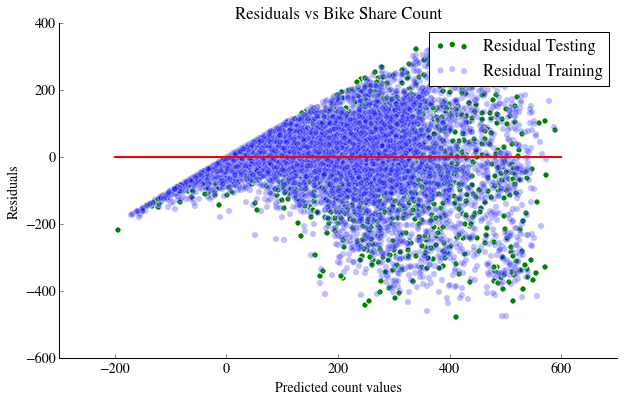

Bike Sharing Demand
This problem was hosted by Kaggle as a knowledge competition and was an opportunity to practice a regression problem on an easily manipulatable dataset. The aim was to predict as accurately as possible bike rentals for the 20th day of the month by using the bike rentals from the previous 19 days that month, using two year's worth of data.
We observe that 'registered' users show a strong bimodal distribution with hour of the day, as they probably use their bike to travel to and from work. On the hand, this is not observed for the 'casual' users whose usage peaks in the middle of the day. Also we can see an increase in bike usage from the 'casual' users at the weekend compared to the week and an oppositive behaviour from the 'registered' users.
- Models were scored on their ability to minimise the Root Mean Squared Logarithmic Error function
- The benchmark to beat in this competition was 1.58456
- Our linear regression model had an error of 0.65049
- Our Extremely Random Forest model had an error of 0.48668
We would like to thank Kaggle for another great competition
Please refer to the accompanying ipython notebook for details of the analysis we undertook. A summary is documented below.Exploratory Analysis
We began by conducting exploratory analysis on the bike rental data. We were provided with bike rentals per hour (shared across 'casual' and 'registered' users) along with a number of features associated with that hour. A number of trends were immediately apparent and suggested that certain features would be strong predictors.We observe that 'registered' users show a strong bimodal distribution with hour of the day, as they probably use their bike to travel to and from work. On the hand, this is not observed for the 'casual' users whose usage peaks in the middle of the day. Also we can see an increase in bike usage from the 'casual' users at the weekend compared to the week and an oppositive behaviour from the 'registered' users.
Figure 1: Average Bike Rental Count vs Hours
The weather also plays a significant factor in rentals, with temperature being particularly significant:
Figure 2: Average Bike Rental Count vs Weather Condition
Linear Regression
Initially we ran a standard linear regression model, however its predicitive power was drastically limited for a number of reasons:- Count dataset composed of exclusively positive numbers
- Highly non-linear behaviour and heteroskedacity seen in the residuals violating linear regression assumptions
Below is a plot of the linear model residuals:

Figure 3: Bike Rental Residuals
To begin addressing the above, we took the log of the count data and built a linear regression model. By doing so, we can ensure the count values returned from our model are always positive.
The following is a plot of our predicted values against actual values tested on our held-out dataset, using the Log-Linear model:
Figure 4: Predicted Rental vs Actual Rental - Linear Regression
This model after submission to Kaggle generated a Root Mean Squared Logarithmic Error of 0.65049. A respectable start.
Random Forest
We now implemented a Random Forest and Extremely Random Forest model, both of which are non parametric models which can be used for both regression and classification. The basic premise of these models is to create a very large number of random decision trees using our training dataset and then averaging over these trees, which has the effect of enabling the signal to rise above the noise. Random Forests, especially when trained on a large number of trees, have proven to provide good predictions and can model features of both continous and categorical types.We undertook the following steps to optimise and test both our Random Forest and Extremely Random Forest models:
- 1. Hyperparameter selection through K-Fold cross validation
- 2. Optimal model fitting
- 3. Feature engineering and model combining
The first two of these enabled us to fit a significantly improved model with a Root Mean Squared Logarithmic Error of 0.48668. Step 3 consisted of undertaking PCA on the data set to pre-process it prior to fitting the Random Forest as well as creating two separate models for the 'registered' and 'casual' users, to better honour their differences. However, frustratingly, both feature engineering and model combining were unable to improve our score.
Neverthless our Extra random forest did succeed in generating the following predictions relative to the test set (note the decreased dispersion at high counts):

Figure 5: Predicted Rental vs Actual Rental - Extremely Random Forest
Next Steps
The main avenue for model improvement seems to be feature creation or feature extraction. However so far, this has not yielded fruitful results. We will leave you with a plot of the residuals against the different features, which highlights the feature values we are struggling to predict.Maybe you have some ideas?